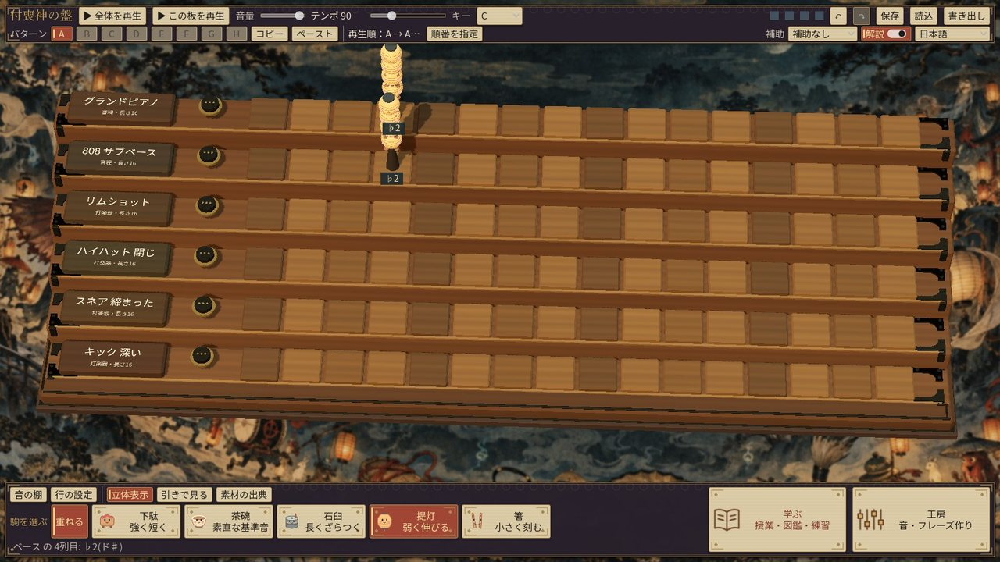

駒を置けば、鳴る。

音楽を組む盤(開発中)
古い道具に宿る妖怪、付喪神。下駄、茶碗、石臼、提灯、箸の駒を、16列×6行の木の盤に置くと、その場で音が鳴ります。
旋律の行では、音の高さが駒の浮く高さになります。盤を横から回して見ると、メロディーがそのまま立体の線になって見えます。
- 置けば鳴る説明を読まなくても、駒を置いた瞬間から音楽になる。
- 音を自分で作る録った音や短いフレーズを工房で作り、盤の行に割り振る。
- 遊びながら学ぶ同じ盤で、リズムと和音の仕組みを体で覚える。


制作記録は YouTube で、火・金・日に出しています。
YouTube で制作記録を見る付喪神の盤
Salon der Glut
開発中